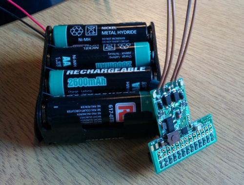

Hamish Cunningham, November 2013
Mobile power for the Pi — easy on the one hand, hard on the other: it is easy to plug in a 5v battery pack — but when it runs out your Pi gets a power cut that might well corrupt the SD card.
Over the last year we've been designing what we hope is the perfect mobile power solution for the Pi, which we're calling MoPi, and we've just taken delivery of the second generation prototype. I think it does pretty much everything you could want for your Pi on the go:
Here's the circuit board, with an eight-pack of AAs (that will get you around 9 hours of mobile time for a Model B Pi):

Next up: a KickStarter to fund the final development (with deliveries planned for early in the new year). Watch this space!